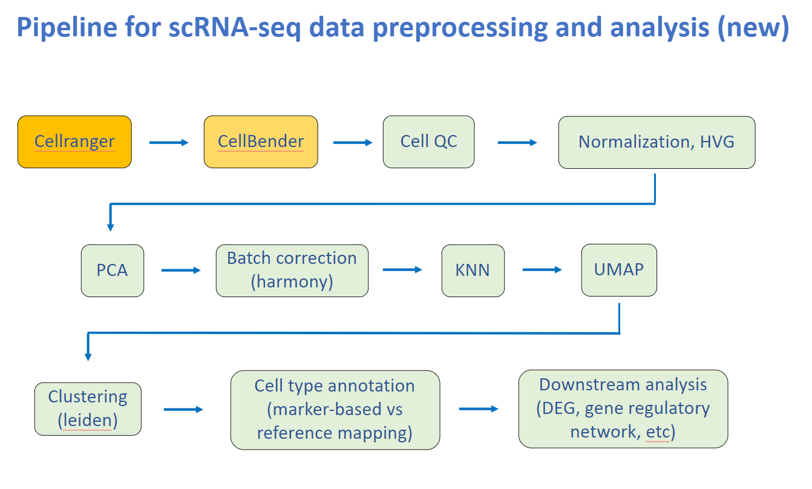
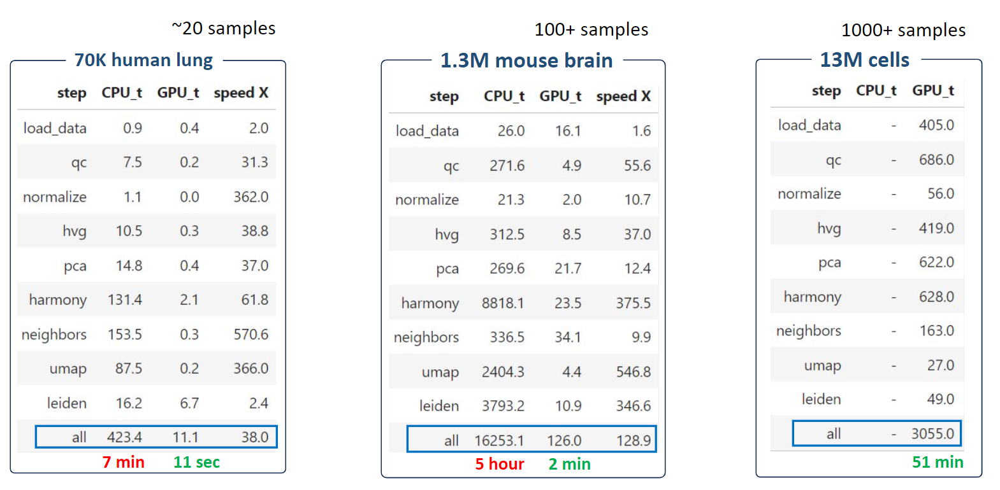

Welcome to ScaleSC
ScaleSC
A GPU-accelerated tool for large scale scRNA-seq pipeline.
Highlights • Why ScaleSC • Installation • API Reference
Highlights
- Fast scRNA-seq pipeline including QC, Normalization, Batch-effect Removal, Dimension Reduction in a similar syntax as
scanpyandrapids-singlecell. - Scale to dataset with more than 10M cells. Chunk the data to avoid the
int32limitation incupyx.scipy.sparseused byrapids-singlecellthat disables the computing for even moderate-size dataset (~1M). - Reconcile output at each step to
scanpyto reproduce the same results as on CPU end. - Improvement on
harmonypywhich allows dataset with more than 10M cells and more than 1000 samples to be run on a single GPU (A100 80G).
Why ScaleSC
ScaleSC Pipeline

ScaleSC includes regular prerpocessing steps: QC, Filtering, HVG, PCA, Batch Correction, Clustering, Annotation.
Overview of 3 different packages*
* Test on datasets with ~35k genes. ScaleSC only support to run Harmony on a single GPU, this memory limitation greatly limits the capability of scaling to even larger dataset. However, there would be no limitation on number of cells if you prefer not to run Harmony (QC, HVG, and PCA only).
| scanpy | scalesc | rapids-singlecell | |
|---|---|---|---|
| GPU Support | ❌ | ✅ | ✅ |
| int32 Issue | ❌ | ❌ | ✅ |
| Upper Limit of # Cells | ♾️ | ~20M | ~1M |
| Upper Limit of # Samples | ♾️ | >1000 | <100 |
Time comparsion between Scanpy(CPU) and ScaleSC(GPU) on A100(80G)

ScaleSC significantly reduces running time from hours to several minutes. For the extremely large 13M dataset, ScaleSC can finish all steps in just 1 hour!
How To Install
Note: ScaleSC requires a high-end GPU (> 24G VRAM) and a matching CUDA version to support GPU-accelerated computing.
Requirements:
- RAPIDS from Nvidia
- rapids-singlecell, an alternative of scanpy that employs GPU for acceleration.
- Conda, version >=22.11 is strongly encoruaged, because conda-libmamba-solver is set as default, which significant speeds up solving dependencies.
- pip, a python package installer.
Environment Setup:
-
Install RAPIDS through Conda,
conda create -n scalesc -c rapidsai -c conda-forge -c nvidia rapids=24.10 python=3.10 'cuda-version>=11.4,<=11.8'
Users have flexibility to install it according to their systems by using this online selector.
-
Activate conda env,
conda activate scalesc
-
Install rapids-singlecell using pip,
pip install rapids-singlecell
-
Install scaleSC,
- pull scaleSC from github
git clone https://github.com/interactivereport/scaleSC.git
- enter the folder and install scaleSC
cd scaleSCpip install .
- pull scaleSC from github
- check env:
python -c "import scalesc; print(scalesc.__version__)"== 0.1.0python -c "import cupy; print(cupy.__version__)">= 13.3.0python -c "import cuml; print(cuml.__version__)">= 24.10python -c "import cupy; print(cupy.cuda.is_available())"= Truepython -c "import xgboost; print(xgboost.__version__)>= 2.1.1, optionally for marker annotation
Tutorial
- See this tutorial for details.